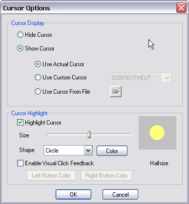

(From the main menu, choose Options->Cursor Options)

Setting cursor options can help illustrate the action you are recording by drawing attention to the area where the action happens. The following cursor effects can be selected:
Hide Cursor - The cursor will be hidden during screen capture.
Use Actual Cursor - The actual shape and position of the cursor will be recorded during screen capture.
Use Custom Cursor - Replace the recorded cursor with a customized one.
Use Cursor From File - Replace the recorded cursor with a cursor that is loaded from file.
Highlight Cursor - When this option is selected, the recorded cursor will have a highlight area around it. This helps in calling attention to the movements of the cursor. You can set the shape, size and color of the highlight area.